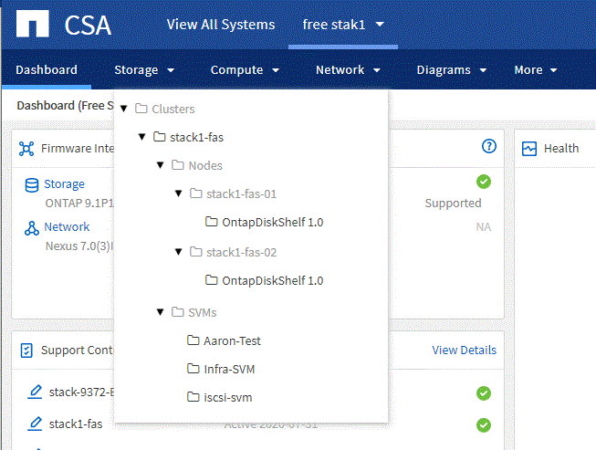

Dokumentationsänderungen beantragen
Dokumentationsänderungen beantragen In GitHub bearbeiten
In GitHub bearbeiten Leitfaden für Beitragende
Leitfaden für BeitragendeArchiv des „What’s New in Converged Systems Advisor“
Beitragende
NetApp aktualisiert regelmäßig den Converged Systems Advisor, um Ihnen neue Funktionen, Verbesserungen und Fehlerbehebungen zu bieten.
Um zu überprüfen, ob die FlexPod-Komponenten vom CSA-Agenten unterstützt werden, verwenden Sie die "NetApp Interoperabilitäts-Matrix-Tool" (IMT).
Inhalt
Dieses Archiv enthält Informationen aus den folgenden Versionen:
30. April 2020
Diese Version umfasst folgende Verbesserungen:
Upgrade Advisor
Nun können Sie die Kompatibilität Ihrer VMware vCenter und ONTAP Versionen mit Ihren Nexus und UCS Komponenten prüfen. Verwenden Sie Upgrade Advisor im Dashboard unter Firmware-Interoperabilität, um die Kompatibilität zu überprüfen. Alle Versionen, die Sie sehen, werden unterstützt.
Cluster-Interconnect-Switch
Cluster Interconnect Switch wurde in der Dashboard-Ansicht unter Firmware-Interoperabilität hinzugefügt. Jetzt können Sie den Support von ONTAP Cluster Interconnect Switches für die folgenden Modelle überwachen:
-
Cisco Nexus 3132Q-V
-
Cisco Nexus 3232C
-
Cisco Nexus 92300YC

Im Agent können Sie nun im Dropdown-Menü * Geräteinformationen hinzufügen einen Cluster-Interconnect-Switch als Gerät hinzufügen.

Verbesserungen der Kapazitätskarten
Zudem wurden Links zur Auslastung der Netzwerkports und zur Auslastung von UCS Blade Servern hinzugefügt, um die FlexPod Infrastruktur zu überwachen und zu erweitern. Wenn Sie die Kapazität ermitteln, werden in der Dashboard-Ansicht zwei neue Links angezeigt.
Die Port-Auslastung verweist auf detaillierte Informationen für Schnittstellen im Netzwerk-Tier.
UCS Blade Server-Auslastung Links zu detaillierten Informationen für Blades im Computing-Tier
Warnmeldungen im Systemdiagramm
Das Diagramm zeigt die Alarme in den Diagrammansichten Ihres Systems, damit Sie Ihre Infrastruktur besser überwachen können.
3 Februar 2020
Diese Version umfasst folgende Verbesserungen:
Verbesserungen an der Navigation
-
Mit dieser Version können Sie alle Ihre Systeme in Alle Systeme anzeigen sehen.
-
Es ist einfacher für Sie, die Struktur Ihrer Komponenten-Tiers zu sehen und zu navigieren. Sie können das Dropdown-Menü und die Pfeile verwenden, um Ihre Geräte anzuzeigen.
-
Es ist auch einfacher, mit einem Breadcrumb-Pfad zur und von der Dashboard-Ansicht (Home) zu navigieren.

Aggregatdetails
In der Dashboard-Ansicht sehen Sie jetzt einen Link zu Aggregatdetails, wenn Sie zur Kapazität wechseln. Mithilfe des bereitgestellten Links können Sie ausführliche Informationen zu Ihren Aggregaten in der Storage-Tier anzeigen.


Probleme wurden behoben
Die folgenden bekannten Probleme wurden in dieser Version behoben:
| Fehler-ID | Beschreibung |
|---|---|
Single Node MetroCluster zeigt das IOXM-Erweiterungsmodul in der Zusammenfassung von Übersicht und Regeln auf der Seite mit den Cluster-Details nicht an. |
-
Kehren Sie zu zurück Inhalt
7. November 2019

|
Alle neuen Funktionen und Verbesserungen in dieser Version werden automatisch bereitgestellt, nachdem Sie den FlexPod zu Converged Systems Advisor hinzugefügt haben. Befolgen Sie die Anweisungen unter "Erste Schritte" Fügen Sie Ihren FlexPod als konvergente Infrastruktur beim Converged Systems Advisor hinzu. |
Diese Version umfasst die folgenden neuen Funktionen und Verbesserungen:
MetroCluster Awareness
Converged Systems Advisor unterstützt jetzt das Hinzufügen eines MetroCluster FlexPod Standorts als konvergente Infrastruktur. Analysen können nun den Zustand beider Seiten des MetroCluster bestimmen.
NVMe Awareness
Converged Systems Advisor führt nun Analysen durch, um die Konfiguration des NVMe-Protokolls, das auf ONTAP 9.4 und höher unterstützt wird, zu prüfen.
Verbesserte Interoperabilitätsfunktionalität
Converged Systems Advisor verfügt über eine aktualisierte Interoperabilitätskarte, die mit einem Popup-Fenster verknüpft wird, in dem die aktuellen, nächsten und neuesten für jede Komponente unterstützten Versionen angezeigt werden. Ein neuer Bericht wurde in dem Pop-up hinzugefügt, um einen individuellen Interoperabilitätsbericht pro Komponentenebene anzuzeigen.
-
Kehren Sie zu zurück Inhalt
24 Juli 2019
Diese Version umfasst die folgenden neuen Funktionen und Verbesserungen:
Unterstützung für Cisco ACI in FlexPod
Converged Systems Advisor unterstützt jetzt FlexPod Designs mit Cisco ACI Networking. Die Unterstützung und Konfiguration aller Geräte in Ihrem FlexPod wird bewertet, selbst die beiden dynamisch ermittelten Lamellenschalter, die mit Ihren anderen FlexPod-Geräten verbunden sind.
Unterstützung mehrerer Cluster in einer einzelnen FlexPod
Converged Systems Advisor unterstützt jetzt mehrere Cluster in einem einzigen FlexPod. Storage ONTAP-Regeln werden auf allen Clustern verarbeitet. Alle Cluster werden im Systemdiagramm dargestellt.
-
Kehren Sie zu zurück Inhalt
25. April 2019
Diese Version umfasst die folgenden neuen Funktionen und Verbesserungen:
Automatisches Auflösen fehlgeschlagener Regeln
Converged Systems Advisor kann jetzt Probleme automatisch lösen, die bestimmte Regeln zum Versagen führen. Diese Funktion wird automatisch aktiviert, indem Sie Ihren Agenten neu starten.
Unterdrückte Regeln werden angezeigt
Sie können jetzt eine globale Liste unterdrückter Regeln in Converged Systems Advisor anzeigen und Alarme für unterdrückte Regeln aus der Liste erneut aktivieren.
Probleme wurden behoben
Die folgenden bekannten Probleme wurden in dieser Version behoben:
| Fehler-ID | Beschreibung |
|---|---|
Systemdiagramm-Images werden möglicherweise nicht für eine konvergente Infrastruktur angezeigt |
|
Der Wert für die Storage-Cluster-Effizienz wird falsch angezeigt |
|
Der Nexus-Switch-Port-Status wird möglicherweise falsch angezeigt |
|
Der Status der Speicherplatzreservierung wird falsch angezeigt |
-
Kehren Sie zu zurück Inhalt
28 März 2019
Die folgenden bekannten Probleme wurden in dieser Version behoben:
| Fehler-ID | Beschreibung |
|---|---|
Der Status „Thin Provisioning“ wird in CSA falsch angezeigt |
|
Der Prozentsatz für die Festplattennutzung wird in CSA falsch angezeigt |
|
Schnittstellen, die im Nexus-Switch dem VLAN zugeordnet sind, können mit der tatsächlichen Geräteausgabe in CSA nicht abgeglichen werden |
|
Informationen zur Stromversorgung eines Rack-Servers werden möglicherweise in CSA falsch angezeigt |
-
Kehren Sie zu zurück Inhalt
17 Januar 2019
Diese Version umfasst die folgenden neuen Funktionen und Verbesserungen:
Unterstützung für neue FlexPod-Geräte
Converged Systems Advisor unterstützt jetzt die folgenden FlexPod-Geräte:
-
Cisco UCS C-Serie Rack Server
-
Switches der Nexus 3000 Serie
-
Cisco UCS Switches mit direkter Verbindung zu NetApp Controllern
Eine vollständige Liste der unterstützten Geräte finden Sie im "NetApp Interoperabilitäts-Matrix-Tool".
Detaillierte Informationen zu Hosts und Virtual Machines
Converged Systems Advisor bietet jetzt weitere Informationen zu Ihrer Virtualisierungsumgebung. Sie können detaillierte Informationen zu einzelnen Hosts und virtuellen Maschinen anzeigen, darunter Diagramme, eine Bestandsliste und eine Regelzusammenfassung.

Vereinfachte Handhabung durch Hinzufügen einer Infrastruktur
Converged Systems Advisor ist jetzt einfacher in der können Infrastrukturen hinzugefügt werden. Im Portal können Sie die Informationen Schritt für Schritt eingeben:

Gerätedatei mit einer Datei importieren
Sie können den Converged Systems Advisor-Agenten so konfigurieren, dass Ihre FlexPod-Infrastruktur ermittelt wird, indem Sie eine Datei mit Informationen zu den einzelnen Geräten importieren. Der Import der Geräte ist eine Alternative, jedes Gerät manuell einzeln hinzuzufügen.

Integration in NetApp Active IQ
Sie können Active IQ nun über den Converged Systems Advisor starten. Das folgende Beispiel zeigt einen Active IQ-Link, der auf der Seite Speicher verfügbar ist:

Probleme wurden behoben
Die folgenden bekannten Probleme wurden in dieser Version behoben:
| Fehler-ID | Beschreibung |
|---|---|
4671 |
Firefox reagiert möglicherweise nicht mehr, wenn Sie im Converged Systems Advisor Portal surfen. |
4500 |
Das Converged Systems Advisor-Portal meldet Sie nach Ablauf des Timeout-Intervalls nicht ab. Sie sind weiterhin angemeldet, können Ihre FlexPod Systeme jedoch nicht sehen. |
2794 |
Converged Systems Advisor zeigt „Pass“ für die Regel „VMware Tools Check“ an, obwohl nicht VMware Tools auf der Virtual Machine installiert waren. |
-
Kehren Sie zu zurück Inhalt
13. September 2018
Diese Version von Converged Systems Advisor umfasst die folgenden neuen Funktionen:
-
Eine neue Benutzeroberfläche und neue Benutzerfreundlichkeit, um den FlexPod Betrieb von Kunden zu vereinfachen
-
Validierung des Systemzustands und von Best Practices für VMware Virtualisierung
-
Unterstützung für Cisco MDS Switches mit erweiterter Fibre Channel-Unterstützung